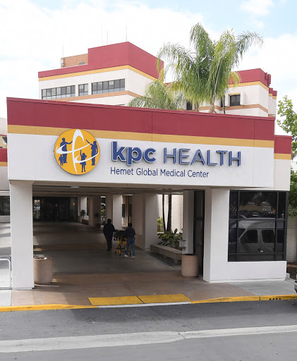
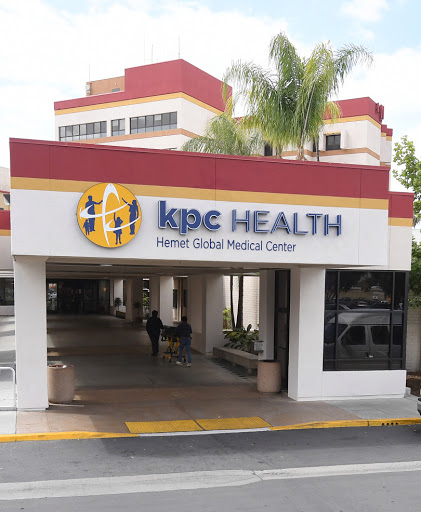

Oscar Gomez
I am a current fourth-year undergraduate at the University of California, Riverside. I plan to graduate at the end of this academic year earning summa cum laude honors and a degree in Biology. Throughout my years in academia, I have worked to gather the skills to continue my education towards a career in medicine.
While attending university I have also taken part in the Cope Health Scholars program. This program exposes its students to the different professional roles and departments that reside within a hospital. As I worked once a week at Saint Joseph’s hospital, I was able to pair up with a variety of professionals ranging from CNA, RN, PA, and even DR. While paired up I was able to assist with many bedside tasks and was even trusted to assist in laboratory processing. Through my interactions with patients, I was able to hone my skills in active listening and decision making by hearing the concerns of each patient and accurately reporting it to the closest care provider. Experiencing multiple departments has also helped narrow my search for the type of specialty I foresee myself in.
Wanting to take a larger part in my community I joined a project called Little EINSTEINs. The students in this project travel to different elementary schools in our surrounding cities and lead interactive lesson plans with different grade levels. Through our events, I was able to connect with students and form one-on-one connections that taught me how each student may have different ways of learning. After a year with this program, I decided to take on a larger role and become of the co-leaders. As a co-leader, I helped organize events, lesson plans, and lead in classroom activities all of which strengthen my intrapersonal skills with the students and my peers.
It has been through these programs and the course work at UCR that I’ve been able to continue to shape myself into the person who is ready to take his skills towards medical school.
Experience
Supervisor
• Composed shedules for front of house staff
• Complied all invoices and assisted in inventory
• Supervised the floor during buisness hours and handled any complaints
Scribe
• in charge of creating medical records
• documented Family History, Review of Systems, and Differential Diagnoses
Undergraduate Researcher
• maintained a running greenhouse
• grew vairous mutants of rice plant
• engineered a carbon isotope chamber
• dedicated 10 hours a week to research
Education
UC Riverside
Portfolio




